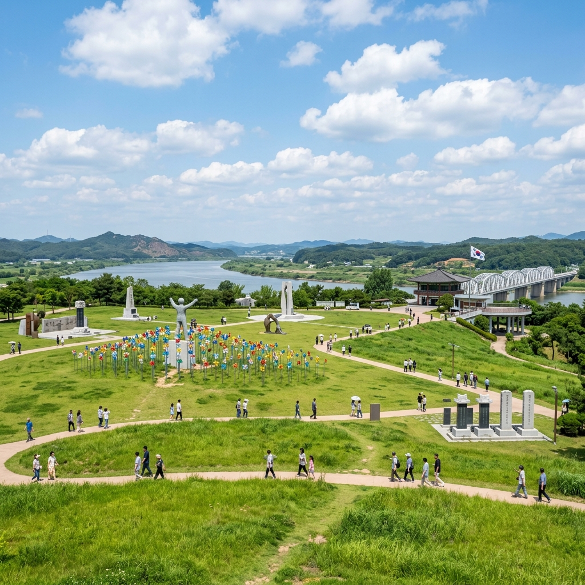
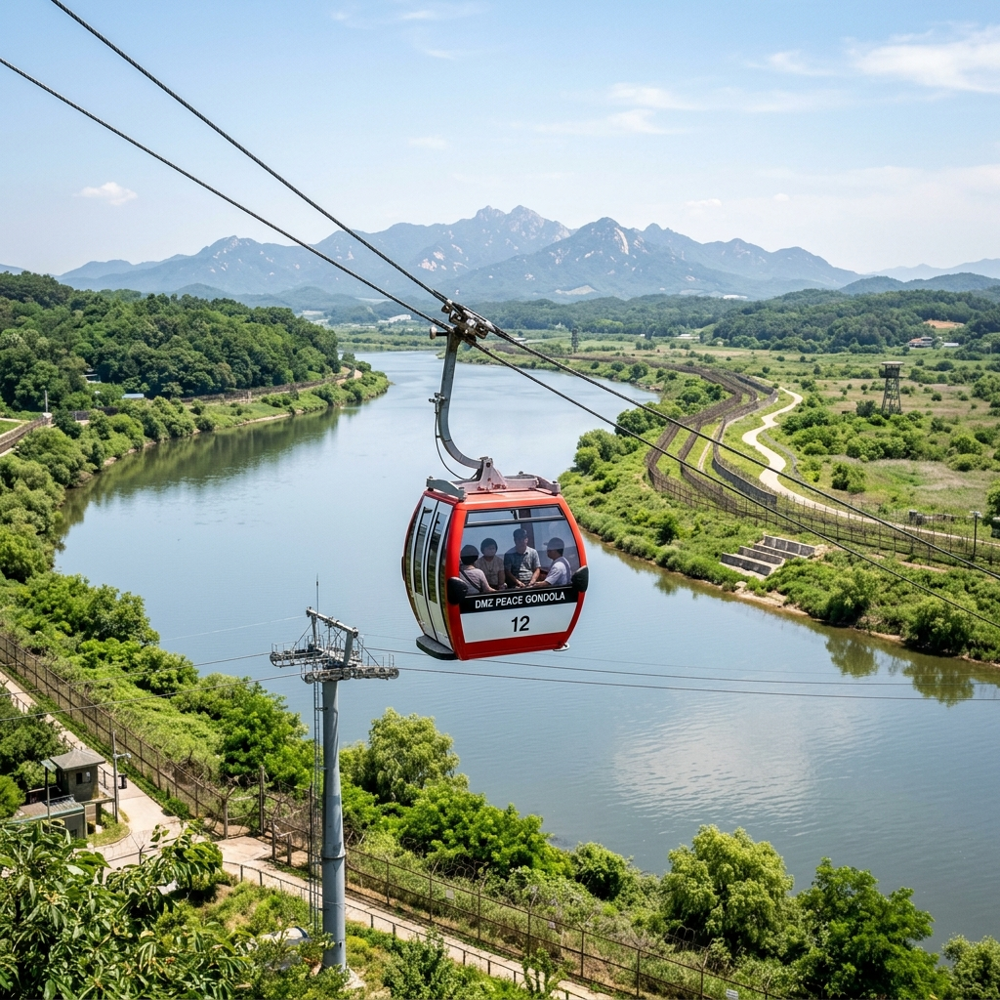
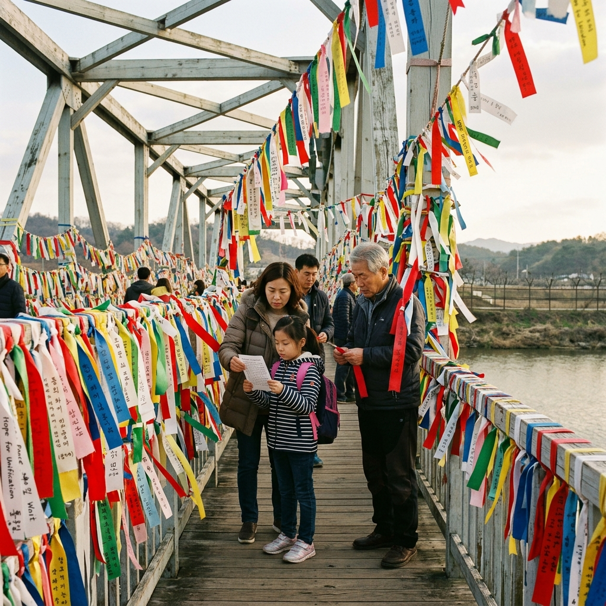

6월 호국보훈의 달에 파주 임진각을 처음 방문했습니다.
평화곤돌라를 타고 임진강 위를 가로지르며 민통선 너머를 조망하는 경험은, 교과서에서만 접하던 분단의 현실을 직접 마주하게 해 주었습니다.
사전 예약부터 동선까지 처음 방문하는 분들을 위해 상세히 정리했습니다.
임진각 평화곤돌라는 임진강 위를 왕복하는 전장 560m의 케이블카로, 운행을 시작한 이후 파주 관광의 핵심 명소가 되었습니다.
주말과 공휴일에는 현장 대기 시간이 2시간 이상으로 길어지는 경우가 잦으므로, 공식 예약 시스템을 통한 사전 예약을 적극 권장합니다.
예약은 임진각관광지 공식 홈페이지 또는 임진각 현장 매표소에서 가능하며, 성수기에는 2~3일 전 예약이 매진되기도 합니다.
탑승 요금은 대인 기준 왕복 8,000원이며, 소인(4세~만12세)은 6,000원, 36개월 이하 유아는 무료입니다.
탑승 정원이 제한되어 있으니 방문 전날 반드시 예약 상태를 확인하세요.
| 구분 | 내용 |
|---|---|
| 대인 요금 | 왕복 8,000원 |
| 소인 요금 | 왕복 6,000원 (4세~만12세) |
| 유아 | 무료 (36개월 이하) |
| 운행 시간 | 오전 9시 ~ 오후 6시 (계절별 변동) |
| 예약 방법 | 현장 매표 or 임진각관광지 공식 홈페이지 |
평화곤돌라에 탑승하면 임진강 수면 위를 천천히 가로지르며 주변 전경이 한눈에 들어옵니다.
왕복 약 8분 남짓 되는 탑승 시간 동안 아래로는 회색빛 임진강 물이 흐르고, 북쪽으로는 민통선 너머 초록빛 구릉이 아득하게 펼쳐집니다.
곤돌라 창문 너머로 녹슨 철교와 끊어진 경의선 철로도 보이는데, 남북 분단의 현실을 이처럼 생생하게 체감할 수 있는 장소는 드뭅니다.
탑승 시간이 짧은 편이므로 스마트폰이나 카메라를 미리 꺼내 두고 탑승하는 것을 추천합니다.
날씨가 맑은 날에는 멀리 개성 방향 산봉우리까지 조망되기도 합니다.

곤돌라 탑승 후에는 바로 옆에 붙어 있는 평화누리공원으로 이동합니다.
평화누리공원은 약 66만㎡ 규모의 드넓은 잔디밭 공원으로, 그 중심에 수천 개의 형형색색 바람개비가 설치된 바람개비언덕이 있습니다.
언덕에 올라서면 임진강 너머 북한 땅과 맞닿은 하늘이 파노라마처럼 펼쳐지며, 6월의 초록빛 잔디와 바람에 돌아가는 색색의 바람개비가 어우러진 풍경은 묘하게 평화롭습니다.
어린 아이를 동반한 가족 방문객이 많은 편으로, 넓은 잔디밭 위에서 자유롭게 뛰어놀기 좋습니다.
공원 전체를 한 바퀴 도는 데 약 40~60분이 소요됩니다.
임진각 광장은 평화곤돌라와 평화누리공원 외에도 둘러볼 장소가 많습니다.
망배단은 명절에 실향민들이 고향을 향해 절을 올리는 공간으로, 6월 호국보훈의 달에는 유독 조용히 묵념하는 어르신들을 많이 볼 수 있습니다.
경의선 철마는 한국전쟁 당시 폭격을 맞아 달리다 멈춰선 증기기관차로, 차체에 촘촘히 박힌 총탄 흔적이 전쟁의 상흔을 고스란히 전달합니다.
임진각 기념관에서는 남북 분단의 역사와 이산가족 이야기를 사진 자료와 함께 전시하고 있으며, 관람료는 무료입니다.
이 세 장소를 함께 둘러보면 파주 방문의 역사적 맥락이 훨씬 풍부해집니다.
임진각은 어느 계절에 방문해도 의미 있는 장소이지만, 6월 호국보훈의 달에 특히 더 뜻깊습니다.
6월 한 달간 임진각 일대에서는 순국선열 추모 행사, 평화 문화제 등 크고 작은 기념 프로그램이 진행되는 경우가 많습니다.
현충일 전후로는 각급 학교의 현장 체험 학습단과 가족 단위 방문객이 크게 늘어나는데, 그만큼 이 장소가 가진 교육적·역사적 의미를 많은 사람들이 직접 느끼러 온다는 뜻이기도 합니다.
분단의 흔적이 생생하게 남아 있는 이곳에서 평화의 소중함을 되새기는 시간은, 그 어떤 역사 수업보다 강렬하고 기억에 오래 남습니다.

서울에서 임진각까지 대중교통으로 이동하는 가장 일반적인 방법은 경의중앙선 문산역에서 환승 버스를 이용하는 것입니다.
서울역 또는 수색역에서 경의중앙선을 타고 문산역(종점)에서 하차한 후, 임진각 방면 시내버스로 환승하면 약 20분 내외로 도착합니다.
전철역에서 임진각까지 직행하는 버스 노선도 있으며, 계절에 따라 서울 시내에서 임진각 직행 버스 노선이 운행되기도 하니 방문 전 확인하세요.
자가용을 이용할 경우 서울에서 자유로를 타고 약 60~70km를 달리면 도착하며, 임진각 주차장은 유료로 운영됩니다.
주말에는 주차장 혼잡이 심하므로 가급적 오전 일찍 출발하는 것을 권장합니다.
임진각을 처음 방문하는 분들을 위한 하루 나들이 동선을 제안합니다.
| 시간대 | 일정 |
|---|---|
| 09:00~09:30 | 임진각 도착, 주차 후 광장 진입 |
| 09:30~10:30 | 임진각 기념관, 망배단, 경의선 철마 관람 |
| 10:30~11:30 | 평화곤돌라 탑승 (사전 예약 시 대기 최소화) |
| 11:30~12:30 | 평화누리공원 바람개비언덕 산책 |
| 12:30~13:30 | 장단콩 두부 정식 점심 |
| 오후 선택 | 오두산 통일전망대 연계 or 파주 헤이리 예술마을 |
임진각 방문 시 꼭 맛보아야 할 음식이 바로 파주 장단콩 두부입니다.
장단면 일대는 비무장지대에 인접한 청정 농업 지역으로, 이곳에서 재배한 장단콩으로 만든 두부는 고소하고 담백한 맛으로 유명합니다.
임진각 인근 식당가에서는 장단콩 두부 정식을 내는 곳들을 어렵지 않게 찾을 수 있으며, 순두부찌개·두부전골·두부구이가 한상에 차려지는 정식이 대표 메뉴입니다.
가격은 1인 기준 약 1만 2천~1만 5천 원 선으로, 분량도 넉넉해 만족도가 높습니다.
점심 시간에는 자리가 금방 차므로 오전 관람을 일찍 마치고 11시 30분~12시 사이에 식당으로 이동하는 것을 권장합니다.

임진각 및 평화누리공원은 민간인 자유 출입 구역이지만, 인근 민통선 이북 지역은 출입 허가가 필요합니다.
안내 표지판을 잘 확인하고 허가 구역 외 지역으로의 무단 진입은 삼가야 합니다.
군사 시설 촬영은 금지되어 있으며, 안내판에 촬영 금지 표시가 있는 구역에서는 카메라·스마트폰 사용을 자제해야 합니다.
곤돌라 탑승 중 음식물 취식이나 과격한 움직임은 안전상 금지되어 있습니다.
자녀와 함께 방문 시 민통선 인근에서는 아이들이 펜스 너머로 손을 뻗거나 장애물에 오르지 않도록 주의를 기울여야 합니다.
시간이 넉넉하다면 임진각에서 약 20분 거리의 오두산 통일전망대를 연계하는 것을 강력히 추천합니다.
오두산 통일전망대는 한강과 임진강이 합류하는 지점의 오두산 정상에 위치하며, 이곳에서는 망원경을 통해 북한 황해북도 개풍군 지역과 그 농촌 마을을 직접 육안으로 관찰할 수 있습니다.
전망대 내부에는 북한의 생활상과 통일 관련 전시물이 마련되어 있고, 야외 전망 데크에서는 두 강이 만나는 합수부 풍경이 장관을 이룹니다.
입장료는 성인 3,000원으로 저렴하며, 임진각→오두산 통일전망대→헤이리 예술마을로 이어지는 파주 하루 코스는 역사와 문화를 동시에 즐길 수 있는 알찬 여행이 됩니다.
#임진각 #평화곤돌라 #파주여행 #DMZ #평화누리공원 #호국보훈 #6월여행 #분단현장 #장단콩두부 #오두산통일전망대